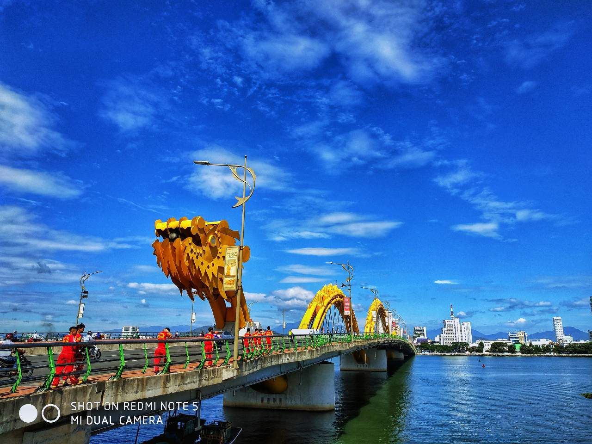

KHÁM PHÁ CẦU RỒNG ĐÀ NẴNG
CẦU RỒNG
Cầu Rồng được khởi công xây dựng ngày 19/7/2009, sau gần 4 năm thi công cầu Rồng được khánh thành đưa vào sử dụng ngày 29/3/2013. Cầu Rồng có chiều dài 666,5 mét, nặng gần 9.000 tấn, 6 làn xe, 5 nhịp, hai làn đường dành cho người đi bộ với tổng vốn đầu tư 1.739 tỷ đồng. Cầu Rồng bắc qua Sông Hàn tại vị trí rất đắc địa, nối sân bay Đà Nẵng với bãi biển tuyệt đẹp.

Cầu Rồng có kiến trúc độc đáo mô phỏng hình con rồng thời Lý mạnh mẽ vươn ra biển, trở thành điểm nhấn quan trọng, là biểu tượng kiến trúc của thành phố. Nét đặc trưng của cầu dễ phân biệt đó là mô hình hệ thống kết cấu dầm thép dưới dạng một con rồng bay qua sông Hàn, hướng ra biển. Đây được cho là thiết kế độc đáo chưa từng có trên thế giới về kết cấu chịu lực là sự kết hợp giữa dầm thép, vòm thép và dầm bê tông.
Điểm nổi bật nữa của cầu Rồng là mọi người có thể chiêm ngưỡng rồng phun lửa, phun nước vào mỗi tối thứ 7, chủ nhật lúc 21h00. Một cảnh tượng rất đẹp mà du khách không nên bỏ qua.
Ý tưởng thiết kế dự án:
Thành phố Đà Nẵng với những bờ biển dài và đẹp đang phấn đấu trở thành thành phố du lịch. Do đó nhu cầu cấp thiết cần có một con đường kết nối thẳng từ sân bay đến phía Đông của thành phố, giúp du khách có thể đến với biển một cách nhanh nhất. Đặc điểm phía Tây dự án (trung tâm thành phố) là rất nhiều các công trình cao tầng đã được hoàn thiện, cùng với các công trình văn hóa cần phải được tôn trọng như Bảo tàng Chàm, chùa An Long. Do vậy, chỉ có một giải pháp duy nhất gắn kết công trình với thành phố là cây cầu này sẽ bắt đầu và kết thúc ở mép nước để đảm bảo không cản trở tầm nhìn, không phá vỡ các công trình kiến trúc cổ kính như Bảo tàng Chăm. Tuyến đường nối và cầu sẽ dẫn các phương tiện và con người đến thẳng quảng trường công cộng ở phía trước bảo tàng, cho phép bộ hành dạo chơi dọc bờ sông có thể lên thẳng cầu. Có thể nói, đề xuất của Tư vấn đã hoàn toàn gắn kết cây cầu vào với thành phố, tạo một sự hòa quyện đồng điệu giữa cổ điển và hiện đại.
Cầu Rồng bắt đầu với hình dáng cơ bản của vòm; một trong những hình dáng cổ điển nhất được sử dụng cho nhịp vượt sông. Điểm đặc biệt của thiết kế là áp dụng vòm liên tục, cả ở trên và dưới bề mặt đường trên cầu; một xương sống liên tục gợi cho chúng ta liên tưởng đến hình ảnh một con Rồng trên sông. Vòm sẽ nâng giữ bản mặt cầu bằng các cáp được bố trí so le, cho phép phần đường và đường bộ hành như nổi trên sông. Tầm nhìn từ các phương tiện giao thông và của người đi bộ không bị che chắn bởi kết cấu của cầu. Thiết kế này kết hợp một hình dáng rất độc đáo của vòm với các công nghệ thiết kế cầu lớn hiện đại.
Một đặc điểm được xem xét đó là tính ưa chuộng “phong thủy” của người dân địa phương. Tự hào là “con Rồng, cháu Tiên”, một mô phỏng của hình dáng Rồng sẽ mang lại niềm tự tin cho cư dân địa phương. Thêm nữa, Long và Phụng là hai linh vật trong tâm niệm của người Á Đông, nếu nhìn sang cầu Trần Thị Lý mới, chúng ta sẽ thấy hình dáng của chim Phụng với 2 sải cánh bay bổng và thân mình hướng lên trên. Thêm một linh vật Rồng sẽ tô điểm thêm cho cảnh quan và niềm tự hào nơi mảnh đất này.
Điểm nổi bật nữa của cầu Rồng là mọi người có thể chiêm ngưỡng rồng phun lửa, phun nước vào mỗi tối thứ 7, chủ nhật lúc 21h00. Một cảnh tượng rất đẹp mà du khách không nên bỏ qua.
Ý tưởng thiết kế dự án:
Thành phố Đà Nẵng với những bờ biển dài và đẹp đang phấn đấu trở thành thành phố du lịch. Do đó nhu cầu cấp thiết cần có một con đường kết nối thẳng từ sân bay đến phía Đông của thành phố, giúp du khách có thể đến với biển một cách nhanh nhất. Đặc điểm phía Tây dự án (trung tâm thành phố) là rất nhiều các công trình cao tầng đã được hoàn thiện, cùng với các công trình văn hóa cần phải được tôn trọng như Bảo tàng Chàm, chùa An Long. Do vậy, chỉ có một giải pháp duy nhất gắn kết công trình với thành phố là cây cầu này sẽ bắt đầu và kết thúc ở mép nước để đảm bảo không cản trở tầm nhìn, không phá vỡ các công trình kiến trúc cổ kính như Bảo tàng Chăm. Tuyến đường nối và cầu sẽ dẫn các phương tiện và con người đến thẳng quảng trường công cộng ở phía trước bảo tàng, cho phép bộ hành dạo chơi dọc bờ sông có thể lên thẳng cầu. Có thể nói, đề xuất của Tư vấn đã hoàn toàn gắn kết cây cầu vào với thành phố, tạo một sự hòa quyện đồng điệu giữa cổ điển và hiện đại.
Cầu Rồng bắt đầu với hình dáng cơ bản của vòm; một trong những hình dáng cổ điển nhất được sử dụng cho nhịp vượt sông. Điểm đặc biệt của thiết kế là áp dụng vòm liên tục, cả ở trên và dưới bề mặt đường trên cầu; một xương sống liên tục gợi cho chúng ta liên tưởng đến hình ảnh một con Rồng trên sông. Vòm sẽ nâng giữ bản mặt cầu bằng các cáp được bố trí so le, cho phép phần đường và đường bộ hành như nổi trên sông. Tầm nhìn từ các phương tiện giao thông và của người đi bộ không bị che chắn bởi kết cấu của cầu. Thiết kế này kết hợp một hình dáng rất độc đáo của vòm với các công nghệ thiết kế cầu lớn hiện đại.
Một đặc điểm được xem xét đó là tính ưa chuộng “phong thủy” của người dân địa phương. Tự hào là “con Rồng, cháu Tiên”, một mô phỏng của hình dáng Rồng sẽ mang lại niềm tự tin cho cư dân địa phương. Thêm nữa, Long và Phụng là hai linh vật trong tâm niệm của người Á Đông, nếu nhìn sang cầu Trần Thị Lý mới, chúng ta sẽ thấy hình dáng của chim Phụng với 2 sải cánh bay bổng và thân mình hướng lên trên. Thêm một linh vật Rồng sẽ tô điểm thêm cho cảnh quan và niềm tự hào nơi mảnh đất này.
Địa chỉ: Đường Nguyễn Văn Linh, Phước Ninh, Đà Nẵng.
Xem bản đồ
Đánh Giá:
Những cây cầu
Các Ngôi Chùa
Điểm du lịch hấp dẫn
Có thể bạn quan tâm
 Chinh phục núi Ngũ Hành Sơn nỗi tiếng Đà Nẵng.
Chinh phục núi Ngũ Hành Sơn nỗi tiếng Đà Nẵng.


Tìm hiểu ẩm thực chợ đêm helio Sơn Trà Đà Nẵng.
August 22, 2018

Có thể bạn chưa biết,nên đi du lịch biển vào thời điểm nào là đẹp nhất.
September 10, 2015